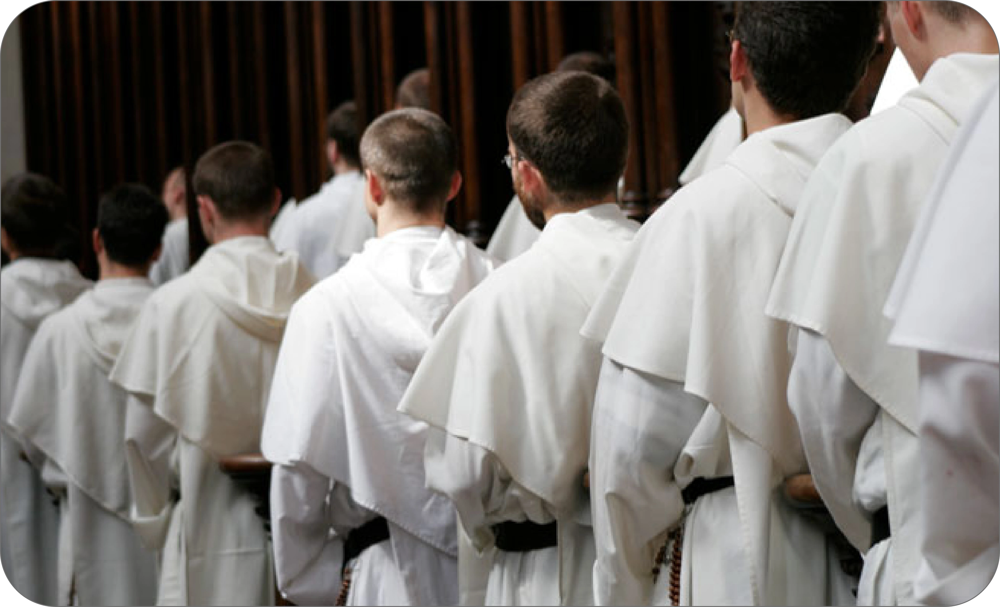

| Santa Caterina da Siena | La missione Domenicana | San Domenico |
L’Ordine dei frati predicatori, fondato da S. Domenico, “fin dalle sue origini è noto esser stato istituito in modo specifico per la predicazione e la salvezza delle anime”. Perciò i nostri frati, secondo l’insegnamento del fondatore, “ovunque, come persone che desiderano procurare la propria e l’altrui salvezza, si comportino onestamente e religiosamente, da uomini evangelici che, seguendo le orme del loro Salvatore, parlano con Dio o di Dio al prossimo” (Prime Costituzioni dell’Ordine).
|
Cammino Domenicano |
|
Basilica Santa Maria Sopra Minerva |
|  |
|
I Nuovi Novizi |
|
Udienza Santo Padre Francesco |
Santa Messa |
Una visione Cristiana |
Santa Maria Sopra Minerva |
Santa Maria del Rosario |
Carisma Domenicano |
Catechismo Giovanile
|
In questa semplice sezione potrai trovare tutti quegli articoli che non possono essere definiti propriamente meditazioni, eppure hanno una saggezza ed una profondità tali da meritare di essere ancora letti e riletti. Ma perchè? Soltanto per un motivo: perchè in essi c’è certamente qualcosa - stiamone pur certi - che può parlare al tuo cuore ed alla tua mente.
Come ci insegna la Regola, il motivo per cui anzitutto ci siamo riuniti è quello di vivere insieme in piena concordia e di avere un’anima sola e un cuor solo in Dio. Questa unione, oltrepassando i confini del convento, raggiunge la sua pienezza nella comunione con la provincia e con tutto l’Ordine. Come nella Chiesa degli Apostoli, anche la nostra comunione ha le sue fondamenta, trova il suo sviluppo e la sua stabilità nello stesso Spirito: in Lui riceviamo il Verbo di Dio Padre con la stessa unica fede, lo contempliamo con lo stesso unico amore e lo lodiamo con una stessa unica voce; in Lui formiamo un solo corpo nutrendoci dello stesso unico Pane; in Lui, infine, abbiamo tutto in comune e siamo destinati a una medesima opera di evangelizzazione.
La vocazione delle monache le pone nel cuore dell’Ordine. Questo era infatti il desiderio di S. Domenico: porre l’accento sulla grazia della contemplazione che, sola, è la vera fonte della vita apostolica. Proprio come una famiglia spirituale, in comunione con la missione dei loro fratelli predicatori, le monache, con la loro preghiera, accompagnano il loro ministero e apostolato di testimonianza del Cristo risorto.
In questa semplice sezione potrai trovare tutti quegli articoli che non possono essere definiti propriamente meditazioni, eppure hanno una saggezza ed una profondità tali da meritare di essere ancora letti e riletti. Ma perchè? Soltanto per un motivo: perchè in essi c’è certamente qualcosa - stiamone pur certi - che può parlare al tuo cuore ed alla tua mente.

Nelle prime Costituzioni del nostro Ordine (1228) si esortava il Maestro dei novizi a insegnare ai giovani che iniziavano il cammino formativo nella vita fraterna, a ringraziare con gioiosa gratitudine per ogni dono ricevuto dall’esterno (“Benedetto sia il Signore nei suoi doni”).
Minimal5€Il versamento viene realizzato tramite il Consorzio Triveneto S.p.A. (Viale dell’Industria 23
- 35129 Padova) che cura la sicurezza nella gestione delle transazioni, certificate da
“Authentic Sites use thawte SSL Web Server Certificates”, con il protocollo SSL |
Buona Carità15€Il versamento viene realizzato tramite il Consorzio Triveneto S.p.A. (Viale dell’Industria 23
- 35129 Padova) che cura la sicurezza nella gestione delle transazioni, certificate da
“Authentic Sites use thawte SSL Web Server Certificates”, con il protocollo SSL |
Extra Carità25€Il versamento viene realizzato tramite il Consorzio Triveneto S.p.A. (Viale dell’Industria 23
- 35129 Padova) che cura la sicurezza nella gestione delle transazioni, certificate da
“Authentic Sites use thawte SSL Web Server Certificates”, con il protocollo SSL |
Utilizzate il modulo sottostante per inviarci i vostri commenti o segnalare eventuali problemi riscontrati nella ricerca di informazioni sul nostro sito web. Leggiamo con attenzione tutti i commenti, ma vi ricordiamo che non possiamo rispondere ai commenti che ci inviate.